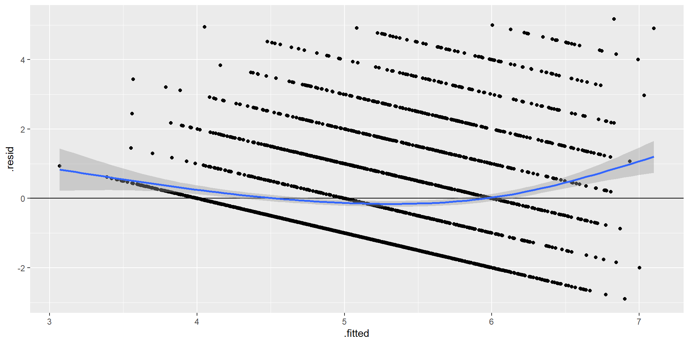
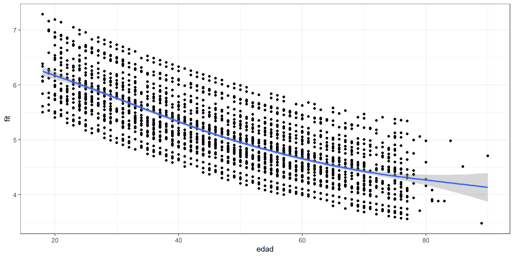

pacman::p_load(dplyr, summarytools, sjPlot,texreg, corrplot,ggplot2,ggfortify,sandwich,lmtest,sjlabelled)Práctico 5. Documentos reproducibles
Metodología Cuantitativa Avanzada - Magíster en Ciencias Sociales
Presentación
La siguiente práctica tiene el objetivo de introducir en los supuestos y robustez del modelo de regresión. Por esta razón, volveremos a algunos de los contenidos previos relacionados con la estimación, análisis de residuos y ajuste. Para ello, utilizaremos la base de datos de la tercera ola del Estudio Longitudinal Social del Chile 2018 con el objetivo de analizar los determinantes de la Participación Ciudadana.
La versión original de este ejercicio proviene del curso de Estadística multivariada versión 2022.
Librerías
Datos
El Estudio Longitudinal Social del Chile ELSOC, único en Chile y América Latina, consiste en encuestar a casi 3.000 chilenos, anualmente, a lo largo de una década. ELSOC ha sido diseñado para evaluar la manera cómo piensan, sienten y se comportan los chilenos en torno a un conjunto de temas referidos al conflicto y la cohesión social en Chile. La población objetivo son hombres y mujeres entre 15 y 75 años de edad con un alcance nacional, donde se obtuvo una muestra final de 3748 casos en el año 2018.
load("../files/data/elsoc.RData")#Cargamos la base de datos desde internet
load(url("https://github.com/Kevin-carrasco/metod1-MCS/raw/main/files/data/elsoc.RData"))Explorar datos
A partir de la siguiente tabla se obtienen estadísticos descriptivos que luego serán relevantes para realizar las transformaciones y análisis posteriores.
view(dfSummary(elsoc, headings = FALSE, method = "render"))| No | Variable | Label | Stats / Values | Freqs (% of Valid) | Graph | Valid | Missing | ||||||||||||||||||||||||||||||||||
|---|---|---|---|---|---|---|---|---|---|---|---|---|---|---|---|---|---|---|---|---|---|---|---|---|---|---|---|---|---|---|---|---|---|---|---|---|---|---|---|---|---|
| 1 | sexo [numeric] | Sexo entrevistado |
|
|
 |
3748 (100.0%) | 0 (0.0%) | ||||||||||||||||||||||||||||||||||
| 2 | edad [numeric] | Edad entrevistado |
|
70 distinct values |  |
3748 (100.0%) | 0 (0.0%) | ||||||||||||||||||||||||||||||||||
| 3 | educ [factor] | Nivel educacional |
|
|
 |
3743 (99.9%) | 5 (0.1%) | ||||||||||||||||||||||||||||||||||
| 4 | pospol [factor] | Autoubicacion escala izquierda-derecha |
|
|
 |
3664 (97.8%) | 84 (2.2%) | ||||||||||||||||||||||||||||||||||
| 5 | part01 [numeric] | Frecuencia: Firma carta o peticion apoyando causa |
|
|
 |
3742 (99.8%) | 6 (0.2%) | ||||||||||||||||||||||||||||||||||
| 6 | part02 [numeric] | Frecuencia: Asiste a marcha o manifestacion pacifica |
|
|
 |
3745 (99.9%) | 3 (0.1%) | ||||||||||||||||||||||||||||||||||
| 7 | part03 [numeric] | Frecuencia: Participa en huelga |
|
|
 |
3745 (99.9%) | 3 (0.1%) | ||||||||||||||||||||||||||||||||||
| 8 | part04 [numeric] | Frecuencia: Usa redes sociales para opinar en temas publicos |
|
|
 |
3743 (99.9%) | 5 (0.1%) | ||||||||||||||||||||||||||||||||||
| 9 | quintilemiss [factor] |
|
|
 |
3748 (100.0%) | 0 (0.0%) |
Generated by summarytools 1.0.1 (R version 4.3.2)
2024-05-31
view_df(elsoc,max.len = 50)| ID | Name | Label | Values | Value Labels |
| 1 | sexo | Sexo entrevistado | 0 1 |
Hombre Mujer |
| 2 | edad | Edad entrevistado | range: 18-90 | |
| 3 | educ | Nivel educacional | 1 2 3 4 5 |
Primaria incompleta menos Primaria y secundaria baja Secundaria alta Terciaria ciclo corto Terciaria y Postgrado |
| 4 | pospol | Autoubicacion escala izquierda-derecha | 1 2 3 4 |
Derecha Centro Izquierda Indep./Ninguno |
| 5 | part01 | Frecuencia: Firma carta o peticion apoyando causa | 1 2 3 4 5 |
Nunca Casi nunca A veces Frecuentemente Muy frecuentemente |
| 6 | part02 | Frecuencia: Asiste a mbackground-color:#eeeeeeha o manifestacion pacifica |
1 2 3 4 5 |
Nunca Casi nunca A veces Frecuentemente Muy frecuentemente |
| 7 | part03 | Frecuencia: Participa en huelga | 1 2 3 4 5 |
Nunca Casi nunca A veces Frecuentemente Muy frecuentemente |
| 8 | part04 | Frecuencia: Usa redes sociales para opinar en temas publicos |
1 2 3 4 5 |
Nunca Casi nunca A veces Frecuentemente Muy frecuentemente |
| 9 | quintilemiss | Quintil 1 Quintil 2 Quintil 3 Quintil 4 Quintil 5 Missing |
||
elsoc <- elsoc %>% mutate(partpol=rowSums(select(., part01,part02,part03,part04)))Estimación
fit01 <- lm(partpol ~ sexo, data=elsoc)
fit02 <- lm(partpol ~ sexo + edad, data=elsoc)
fit03 <- lm(partpol ~ sexo + edad + quintilemiss, data=elsoc)
fit04 <- lm(partpol ~ sexo + edad + quintilemiss + pospol, data=elsoc)labs01 <- c("Intercepto","Sexo (mujer=1)","Edad",
"Quintil 2","Quintil 3","Quintil 4","Quintil 5","Quintil perdido",
"Centro (ref. derecha)","Izquierda","Idep./Ninguno")
htmlreg(list(fit01,fit02,fit03, fit04),doctype = FALSE,
custom.model.names = c("Modelo 1","Modelo 2","Modelo 3", "Modelo 4"),
custom.coef.names = labs01)| Modelo 1 | Modelo 2 | Modelo 3 | Modelo 4 | |
|---|---|---|---|---|
| Intercepto | 5.56*** | 7.62*** | 7.03*** | 7.97*** |
| (0.06) | (0.12) | (0.15) | (0.16) | |
| Sexo (mujer=1) | -0.13 | -0.08 | 0.07 | 0.12 |
| (0.08) | (0.07) | (0.07) | (0.07) | |
| Edad | -0.04*** | -0.04*** | -0.04*** | |
| (0.00) | (0.00) | (0.00) | ||
| Quintil 2 | 0.23* | 0.21 | ||
| (0.12) | (0.11) | |||
| Quintil 3 | 0.51*** | 0.51*** | ||
| (0.12) | (0.11) | |||
| Quintil 4 | 0.56*** | 0.50*** | ||
| (0.12) | (0.11) | |||
| Quintil 5 | 1.02*** | 0.88*** | ||
| (0.12) | (0.12) | |||
| Quintil perdido | 0.51** | 0.59*** | ||
| (0.18) | (0.18) | |||
| Centro (ref. derecha) | -1.04*** | |||
| (0.10) | ||||
| Izquierda | -1.13*** | |||
| (0.11) | ||||
| Idep./Ninguno | -1.60*** | |||
| (0.10) | ||||
| R2 | 0.00 | 0.09 | 0.11 | 0.17 |
| Adj. R2 | 0.00 | 0.09 | 0.11 | 0.17 |
| Num. obs. | 3740 | 3740 | 3740 | 3656 |
| ***p < 0.001; **p < 0.01; *p < 0.05 | ||||
Diágnosticos
Casos influyentes
Para determinar si un outlier es un caso influyente, es decir que su presencia/ausencia genera un cambio importante en la estimación de los coeficientes de regresión, calculamos la Distancia de Cook..
Posteriormente, se establece un punto de corte de \(4/(n-k-1)\):
n<- nobs(fit04) #n de observaciones
k<- length(coef(fit04)) # n de parametros
dcook<- 4/(n-k-1) #punt de corteSi lo graficamos se ve de la siguiente manera:
final <- broom::augment_columns(fit04,data = elsoc)
final$id <- as.numeric(row.names(final))
# identify obs with Cook's D above cutoff
ggplot(final, aes(id, .cooksd)) +
geom_bar(stat="identity", position="identity") +
xlab("Obs. Number")+ # Modificación nombre eje x
ylab("Cook's distance")+ # Modificación nombre eje y
geom_hline(yintercept=dcook)+ # Incluir una línea horizontal
geom_text(aes(label=ifelse((.cooksd>dcook),id,"")), # geom text agrega nombre a los casos, en esta oportunidad solo a los valores mayores a dcook
vjust=-0.2, hjust=0.5)
Identificamos los casos influyentes y filtramos la base de datos:
ident<- final %>% filter(.cooksd>dcook)
elsoc02 <- final %>% filter(!(id %in% ident$id))Estimación sin casos influyentes:
fit05<- lm(partpol~sexo+edad+quintilemiss+pospol,data=elsoc02)labs02 <- c("Intercepto","Sexo (mujer=1)","Edad",
"Quintil 2","Quintil 3","Quintil 4","Quintil 5","Quintil perdido",
"Izquierda (ref. derecha)","Centro","Idep./Ninguno")
htmlreg(list(fit04,fit05),
doctype = FALSE,
custom.model.names = c("Modelo 4", "Modelo 5"),
custom.coef.names = labs02)| Modelo 4 | Modelo 5 | |
|---|---|---|
| Intercepto | 7.97*** | 7.05*** |
| (0.16) | (0.11) | |
| Sexo (mujer=1) | 0.12 | 0.07 |
| (0.07) | (0.05) | |
| Edad | -0.04*** | -0.03*** |
| (0.00) | (0.00) | |
| Quintil 2 | 0.21 | 0.11 |
| (0.11) | (0.08) | |
| Quintil 3 | 0.51*** | 0.34*** |
| (0.11) | (0.08) | |
| Quintil 4 | 0.50*** | 0.32*** |
| (0.11) | (0.08) | |
| Quintil 5 | 0.88*** | 0.57*** |
| (0.12) | (0.08) | |
| Quintil perdido | 0.59*** | 0.31* |
| (0.18) | (0.13) | |
| Izquierda (ref. derecha) | -1.04*** | -0.65*** |
| (0.10) | (0.07) | |
| Centro | -1.13*** | -0.71*** |
| (0.11) | (0.08) | |
| Idep./Ninguno | -1.60*** | -1.14*** |
| (0.10) | (0.07) | |
| R2 | 0.17 | 0.18 |
| Adj. R2 | 0.17 | 0.18 |
| Num. obs. | 3656 | 3460 |
| ***p < 0.001; **p < 0.01; *p < 0.05 | ||
En términos generales, el sentido y significación estadística de los coeficientes del Modelo 5 se mantiene respecto al Modelo 4. Adicionalmente, si observamos que el modelo sin casos influyentes presenta una mejora en ajuste. Por lo tanto, los análisis posteriores se realizaran en base a este modelo.
Linealidad
Para analizar la linealidad respecto de un modelo de regresión, debemos analizar la distribución de los residuos con respecto a la recta de regresión.
- Los residuos deben ser independientes de los valores predichos (fitted values).
- Cualquier correlación entre residuo y valores predichos violarían este supuesto.
- La presencia de un patrón no lineal, es señal de que el modelo está especificado incorrectamente.
ggplot(fit05, aes(.fitted, .resid)) +
geom_point() +
geom_hline(yintercept = 0) +
geom_smooth(se = TRUE)`geom_smooth()` using method = 'gam' and formula = 'y ~ s(x, bs = "cs")'
El gráfico nos indica que existe un patrón en la distribución de los residuos. Para intentar mejorar la estimación podemos realizar una transformación de variables. A continuación presentaremos un ejemplo para la Edad y para los Ingresos.
- Polinomio: \(\text{Edad}^2\)
elsoc02$edad2 <- elsoc02$edad^2
fit06<- lm(partpol~sexo+edad+edad2+quintilemiss+pospol,data=elsoc02)edad<- fit06$model$edad
fit<- fit06$fitted.values
data01 <- as.data.frame(cbind(edad,fit))
ggplot(data01, aes(x = edad, y = fit)) +
theme_bw() +
geom_point()+
geom_smooth()`geom_smooth()` using method = 'gam' and formula = 'y ~ s(x, bs = "cs")'
fit07 <- lm(partpol~sexo+edad+edad2+quintilemiss+pospol,data=elsoc02)labs03 <- c("Intercepto","Sexo (mujer=1)","Edad",
"Quintil 2","Quintil 3","Quintil 4","Quintil 5","Quintil perdido",
"Izquierda (ref. derecha)","Centro","Idep./Ninguno", "Edad²")
htmlreg(list(fit05, fit06, fit07), doctype = FALSE,
custom.model.names = c("Modelo 4", "Modelo 5", "Modelo 6"),
custom.coef.names = labs03)| Modelo 4 | Modelo 5 | Modelo 6 | |
|---|---|---|---|
| Intercepto | 7.05*** | 7.62*** | 7.62*** |
| (0.11) | (0.24) | (0.24) | |
| Sexo (mujer=1) | 0.07 | 0.08 | 0.08 |
| (0.05) | (0.05) | (0.05) | |
| Edad | -0.03*** | -0.06*** | -0.06*** |
| (0.00) | (0.01) | (0.01) | |
| Quintil 2 | 0.11 | 0.11 | 0.11 |
| (0.08) | (0.08) | (0.08) | |
| Quintil 3 | 0.34*** | 0.34*** | 0.34*** |
| (0.08) | (0.08) | (0.08) | |
| Quintil 4 | 0.32*** | 0.32*** | 0.32*** |
| (0.08) | (0.08) | (0.08) | |
| Quintil 5 | 0.57*** | 0.57*** | 0.57*** |
| (0.08) | (0.08) | (0.08) | |
| Quintil perdido | 0.31* | 0.31* | 0.31* |
| (0.13) | (0.13) | (0.13) | |
| Izquierda (ref. derecha) | -0.65*** | -0.65*** | -0.65*** |
| (0.07) | (0.07) | (0.07) | |
| Centro | -0.71*** | -0.70*** | -0.70*** |
| (0.08) | (0.08) | (0.08) | |
| Idep./Ninguno | -1.14*** | -1.13*** | -1.13*** |
| (0.07) | (0.07) | (0.07) | |
| Edad² | 0.00** | 0.00** | |
| (0.00) | (0.00) | ||
| R2 | 0.18 | 0.19 | 0.19 |
| Adj. R2 | 0.18 | 0.18 | 0.18 |
| Num. obs. | 3460 | 3460 | 3460 |
| ***p < 0.001; **p < 0.01; *p < 0.05 | |||
Test homogeneidad de varianza
car::ncvTest(fit06)Non-constant Variance Score Test
Variance formula: ~ fitted.values
Chisquare = 521.5278, Df = 1, p = < 2.22e-16lmtest::bptest(fit06)
studentized Breusch-Pagan test
data: fit06
BP = 385.59, df = 11, p-value < 2.2e-16Tanto el test Breush-Pagan como el de Cook-Weisberg nos indican que existen problemas con respecto a homogeneidad en la distribución de los residuos del modelo debido a que \(p>0.05\) en ambos casos. Es decir, se rechaza \(H_0\) donde se asume que la varianza del error es constante, lo cual nos indica que tenemos problemas de heterocedasticidad en los residuos.
Para hacer frente a este problema, debemos calcular los errores estándar robustos para nuestra última estimación para corregir problemas de heterocedasticidad y así estimar el último modelo nuevamente:
model_robust<- coeftest(fit06, vcov=vcovHC)Comparemos los resultados:
labs04 <- c("Intercepto","Sexo (mujer=1)","Edad",
"Quintil 2","Quintil 3","Quintil 4","Quintil 5","Quintil perdido",
"Izquierda (ref. derecha)","Centro","Idep./Ninguno", "Edad²")
htmlreg(list(fit05, fit06, model_robust), doctype = FALSE,
custom.model.names = c("Modelo 5","Modelo 6", "M6 Robust"), custom.coef.names = labs04)| Modelo 5 | Modelo 6 | M6 Robust | |
|---|---|---|---|
| Intercepto | 7.05*** | 7.62*** | 7.62*** |
| (0.11) | (0.24) | (0.27) | |
| Sexo (mujer=1) | 0.07 | 0.08 | 0.08 |
| (0.05) | (0.05) | (0.05) | |
| Edad | -0.03*** | -0.06*** | -0.06*** |
| (0.00) | (0.01) | (0.01) | |
| Quintil 2 | 0.11 | 0.11 | 0.11 |
| (0.08) | (0.08) | (0.07) | |
| Quintil 3 | 0.34*** | 0.34*** | 0.34*** |
| (0.08) | (0.08) | (0.08) | |
| Quintil 4 | 0.32*** | 0.32*** | 0.32*** |
| (0.08) | (0.08) | (0.08) | |
| Quintil 5 | 0.57*** | 0.57*** | 0.57*** |
| (0.08) | (0.08) | (0.09) | |
| Quintil perdido | 0.31* | 0.31* | 0.31** |
| (0.13) | (0.13) | (0.12) | |
| Izquierda (ref. derecha) | -0.65*** | -0.65*** | -0.65*** |
| (0.07) | (0.07) | (0.09) | |
| Centro | -0.71*** | -0.70*** | -0.70*** |
| (0.08) | (0.08) | (0.09) | |
| Idep./Ninguno | -1.14*** | -1.13*** | -1.13*** |
| (0.07) | (0.07) | (0.08) | |
| Edad² | 0.00** | 0.00** | |
| (0.00) | (0.00) | ||
| R2 | 0.18 | 0.19 | |
| Adj. R2 | 0.18 | 0.18 | |
| Num. obs. | 3460 | 3460 | |
| ***p < 0.001; **p < 0.01; *p < 0.05 | |||
Los resultados del modelo con errores estándar robustos nos indica que nuestras estimaciones son robustas a la presencia de heterocedasticidad en los residuos, debido a que la significancia de los coeficientes se mantiene si lo comparamos con el Modelo 6.
Multicolinealidad
car::vif(fit05)
car::vif(fit06) GVIF Df GVIF^(1/(2*Df))
sexo 1.057775 1 1.028482
edad 1.012463 1 1.006212
quintilemiss 1.085365 5 1.008225
pospol 1.041316 3 1.006770
GVIF Df GVIF^(1/(2*Df))
sexo 1.058907 1 1.029032
edad 38.308809 1 6.189411
edad2 38.275011 1 6.186680
quintilemiss 1.087725 5 1.008444
pospol 1.042085 3 1.006894Entonces, asumiendo que valores del VIF (Variance Inflation Factor) mayores a 2.5, vemos que en el modelo que no incorpora el término cuadrático de edad no tendríamos problemas de multicolinealidad. Sin embargo, al incorporar el término cuadrático, nos muestra un VIF de 6.2 en la variable edad y edad2.
Referencias
Darlington & Hayes 2016 Cap16 Detecting and Managing Irregularities